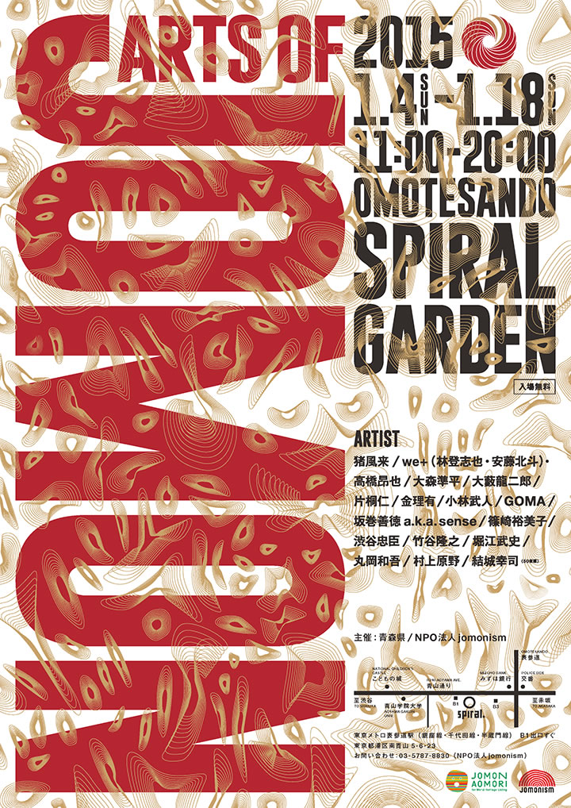

― お知らせ･活動予定 ―
-
■Arts of JOMON in TOKYO
【期 間】２０１５年１月４日（日）～１月１８日（日）
【会 場】東京都港区南青山 表参道Spiral Garden -
■猪風来、岡山大学で講演『縄文スピリットから始まる新しい創造』
【日 時】２０１４年１２月１８日（木）１４：３０～１６：３０
【場 所】岡山大学附属図書館中央図書館１階 ラーニングコモンズ -
■今年もどうぞ宜しくお願い致します
２０１４年元旦 -
■鎮魂と復興を祈念して「縄文いのりの土偶」をつくろう
―東日本大震災への祈り―
|  |
 |
| 【ARTs of JOMON チラシ】 →PDF版を開く |
縄文アートが表参道スパイラルに集結！
2013年にニューヨークとパリ、2014年には青森県県立美術館で開催され、好評を博した縄文アートの展覧会〈ARTs of JOMON〉が新年を迎えたばかりの東京で開催。
縄文式野焼き技法の第一人者、猪風来や俳優の片桐仁ほか縄文文化に共鳴するアーティストが集結し、それぞれの手法で縄文的世界観を披露します。
出展者：猪風来／大森準平／大藪龍二郎／片桐仁／金理有／小林武人／GOMA／坂巻善徳 a.k.a sense／
篠崎裕美子／澁谷忠臣／林登志也(we+) ＋安藤北斗(we+)＋高橋昂也／竹谷隆之／堀江武史／
丸岡和吾／村上原野／結城幸司
■詳細 → ARTs of JOMON in TOKYO（公式サイト）
=∴=∵=∴=∵=∴=∵=∴=∵=∴=∵=∴=∵=∴=∵=∴=∵=∴=∵=∴=∵=∴=∵=∴=∵=∴=∵=∴=
2014年青森の記録 → Arts of JOMON in AOMORI

|
| 【「縄文スピリットから始まる新しい創造」チラシ】 →PDF版を開く |
（岡山大学サイトより）
第３回知好楽セミナー（談話会編）「縄文スピリットから始まる新しい創造」
【日時】 ２０１４年１２月１８日（木）１４：３０～１６：３０
【場所】 岡山大学附属図書館中央図書館１階 ラーニングコモンズ
【講師】
猪風来美術館館長・縄文造形家 猪風来先生
縄文造形家 村上原野先生
【概要】
猪風来先生 来る！
縄文美術でご高名な猪風来先生が附属図書館に来館！
縄文土器に隠された秘密。現代に受け継がれる日本人の心。
北海道の原野で縄文生活を体験された先生に、命の根源に根ざした芸術を熱く語っていただきます。
【定員】 50名
■お問い合わせ先 → 岡山大学（公式サイト）

|
頌春
縄文の根源力～それは万物の豊饒を祈る共生の宇宙観。
混迷の今、縄文力の中にこそ希望や未来がかいま見える。
世界で、日本で、現代縄文芸術運動の大きなうねりを！
生命と魂の縄文スパイラルの爆発を！
今年もどうぞ宜しくお願い致します。

|
このたびの東日本大震災による被災に対しまして、心からのお見舞いと哀悼の意を表します。
被害地の惨状と深い悲しみの中で、再起を期して心を奮い立たせている被災者の皆様への応援の気持ちをこめて
「縄文いのりの土偶」をつくりませんか？
古来より縄文の土偶は、豊饒を願い災難をはらい、鎮魂と再生を祈願してつくられたものです。
猪風来美術館では開館以来、「にぎり地蔵」として願い思いをこめた小さな土偶を、陶芸体験の皆さんに
つくっていただいてきました。
野焼きしたお地蔵さまは、一部美術館と済渡寺をつなぐ参道の祠におかれ、「野辺の地蔵さまロード」として
みんなの思いをつなぐスポットになっています。
２０１０年４月１６日に開催された「春の縄文野焼き祭り」の縄文体験コーナー「にぎり地蔵をつくろう」では
『震災地への思いや気持ちをこめて「縄文いのりの土偶」をつくり、被災された方々へ思いをつなげよう』
との趣旨で呼びかけをさせていただきました。
その際、みなさまに多くのご理解とご賛同をいただきました。
復興はおそらく、これから長くかかることでしょう。
そのため「縄文いのりの土偶」づくりの活動もまた、継続していきたいと思っております。
どうぞ御協力よろしくお願いいたします。
※ 参加費300円は全額、復興義援金として寄付させていただきます。
※ 制作された「縄文いのりの土偶」のご寄付をお願いします。
※ 後日縄文野焼きされた「縄文いのりの土偶」の安置場所は検討させていただきます。